КОМПЛЕКС ПЕРСПЕКТИВНОГО РАЗВИТИЯ
Г. МОСКВЫ
УПРАВЛЕНИЕ ВНЕБЮДЖЕТНОГО ПЛАНИРОВАНИЯ
РАЗВИТИЯ ГОРОДА
УПРАВЛЕНИЕ РАЗВИТИЯ ГЕНПЛАНА
НИИМОССТРОЙ
ВЕДОМСТВЕННЫЕ СТРОИТЕЛЬНЫЕ НОРМЫ
ИНСТРУКЦИЯ
ПО ТЕХНОЛОГИИ СТРОИТЕЛЬСТВА ДЕКОРАТИВНЫХ
БЕТОННЫХ ДОРОЖНЫХ ПОКРЫТИЙ
ВСН 61-97
МОСКВА - 1998
«Инструкция по технологии строительства декоративных бетонных дорожных покрытий» разработана кандидатами технических наук Р. И. Бега, Э. М. Гольдиным, Л. В. Городецким (НИИМосстрой), к. т. н. А. Н. Дмитриевым (Управление развития Генплана).
В инструкции обобщен опыт изготовления цветных бетонных дорожных изделий и эксплуатации монолитных декоративных покрытий за период с 1970 - 1997 гг., а также научно-технические отечественные и зарубежные разработки в области строительства декоративных, в том числе цветных, дорог, тротуаров, площадок различного назначения из модифицированных самоуплотняющихся бетонных смесей.
Инструкция согласована с институтом «Мосинжпроект» и ОАО «Гордорстрой».
|
Комплекс перспективного развития г. Москвы |
Ведомственные строительные нормы |
ВСН 61-97 |
|
|
Управление внебюджетного планирования развития города |
Инструкция по технологии строительства декоративных бетонных дорожных покрытий |
Вводится впервые |
|
|
Управление развития Генплана |
|
1.1. Настоящая инструкция распространяется на строительство в Москве монолитных декоративных бетонных покрытий дорог, тротуаров, пешеходных переходов, автостоянок, видовых площадок из модифицированных самоуплотняющихся бетонных смесей.
Декоративную поверхность получают при помощи бетонных смесей, приготовленных на цветных заполнителях, цветных цементах или пигментах, а также при помощи различных технологических приемов в процессе устройства покрытий.
1.2. Самоуплотняющиеся бетонные смеси получают из жестких или малоподвижных смесей модифицированием их добавкой суперпластификаторов.
1.3. Технология строительства конструкций из модифицированных самоуплотняющихся бетонных смесей отличается от технологии строительства из пластичных смесей необходимостью предварительной установки опалубки или бортовых камней, отсутствием уплотняющих машин и механизмов.
1.4. Доставка бетонной смеси к месту укладки должна осуществляться автобетоносмесителями. Автобетоносмесители могут быть оснащены дозаторами добавок, которые включают следующие основные элементы: емкость объемом 200 - 250 л для хранения и транспортирования суперпластификатора, насос, счетчик, позволяющий контролировать объем подаваемого в барабан смесителя суперпластификатора, система трубопроводов, связанная со счетчиком, распределителем и смесителем.
Рабочие чертежи дозатора добавок, в том числе всесезонного, разработаны по техническим требованиям НИИМосстроя.
|
Внесены НИИМосстроем |
Утверждены: Управлением развития Генплана «22» июля 1997 г |
Дата введения в действие «1» сентября 1997 г |
1.5. Дорожные конструкции с декоративными покрытиями аналогичны конструкциям из обычного бетона и назначаются в соответствии с требованиями проекта или ВСН 7-94.
2.1.1. Для приготовления бетонных смесей должны применяться бездобавочные портландцементы, в том числе цветные, марки не ниже 400, отвечающие требованиям ГОСТ 10178-85*, ГОСТ 965-89. Содержание в клинкере цементов трехкальциевого алюмината С3А должно быть не более 7 %
2.1.2. Белый и цветной цементы должны поставляться в герметичной таре.
2.1.3. Для приготовления бетонной смеси применяются природные, кварцевые или полевошпатовые пески или с добавками. В качестве добавок могут применяться искусственные пески, получаемые дроблением прочных, морозостойких пород.
Пески должны удовлетворять требованиям ГОСТ 8736-85, ГОСТ 10268-80. Модуль крупности песков должен быть более 2,1. Содержание глинистых, илистых или пылеватых частиц в песке должно быть менее 3 % по массе.
2.1.4. Щебень для приготовления бетонной смеси следует применять из горных пород по ГОСТ 8267-82* с размером зерен не более 20 мм. Содержание глинистых, илистых и пылевидных частиц не должно превышать 1 % по массе. Марка щебня по прочности должна быть Др.14-16 (120 - 140 МПа).
2.1.5. Пигменты для получения цветных бетонных смесей должны удовлетворять следующим требованиям:
- иметь высокую дисперсность: удельная поверхность близкая к удельной поверхности цемента для обеспечения высокой гомогенности смеси;
- обладать большой красящей способностью;
- быть щелочестойкими;
- обладать высокой стойкостью к действию солнечного света и атмосферных влияний;
- не иметь растворимых в воде примесей, которые при затворении цемента водой отрицательно влияют на сроки схватывания камня;
- не содержать легкорастворимых солей, способных образовывать выцветы.
2.1.6. Пигменты вводятся в бетонную смесь в количестве, необходимом для получения цвета, предусмотренного проектом, но не более 10 % от массы цемента.
2.1.7. Рекомендуемые отечественные пигменты и их содержание (%) для получения цветных бетонных смесей представлены в табл. 2.1.
Рекомендуемые пигменты
|
Цвет |
Пигменты |
Рекомендуемое содержание пигментов, % от массы цемента |
|
|
неорганические (минеральные) |
органические |
||
|
Красный |
Редоксайд по ТУ 6-10-667 |
- |
6 |
|
Сурик железный по ГОСТ 8135 |
6 |
||
|
Железоокисный по ТУ МХП 1911 |
6 |
||
|
Желтый |
Железоокисный по ТУ МХП 1927 |
- |
8 |
|
Зеленый |
Окись хрома по ГОСТ 2912 |
- |
8 |
|
Фталоцианиновый по ГОСТ 6220 |
0,5 |
||
|
Голубой |
- |
Фталоцианиновый по ГОСТ 6220 |
0,5 |
2.1.8. Возможно использование импортных пигментов, отвечающих требованиям п. 2.1.5.
2.1.9. Выбор и количество вводимых пигментов определяется дорожной лабораторией НИИМосстроя при подборе состава цветных бетонов с учетом применяемых материалов.
2.1.10. Для получения самоуплотняющихся нерасслаивающихся бетонных смесей можно применять добавки суперпластификаторов на основе меламоноформальдегидных или нафталиноформальдегидных сульфированных смол, из которых наиболее распространенным является С-3. Промышленный выпуск этой добавки налажен на Новомосковском заводе «Оргсинтез» в соответствии с ТУ 14-628-80 Минхимпрома.
2.1.11. Добавки-суперпластификаторы выпускаются в виде порошка или раствора различной концентрации. Добавки, поставляемые в растворе, должны отвечать требованиям табл. 2.2.
Характеристика суперпластификаторов
|
Свойства суперпластификаторов |
Размерность |
Показатели |
|
Содержание твердых материалов |
% |
20 - 40 |
|
Плотность |
г/см3 |
1,1 - 1,22 |
|
Водородный показатель |
РН |
7 - 9 |
|
Вязкость |
сп |
20 - 45 |
Более рационально получать добавку в виде порошка.
2.1.12. Вода для приготовления бетонной смеси должна удовлетворять требованиям СНиП Ш-В.1-70 «Бетонные и железобетонные конструкции монолитные. Правила производства и приемки работ».
2.2.1. Бетон из модифицированных самоуплотняющихся смесей, приготовленный на цветном или обычного цвета цементе с добавлением пигментов или без них для различных дорожных конструкций должен отвечать требованиям соответствующих нормативных документов, но не ниже показателей, представленных в табл. 2.3.
2.2.2. При подборе состава бетона, расход цемента которого составляет менее 500 кг/м3, следует в общем объеме заполнителей бетонной смеси увеличить количество песка. Песок фракции 1,2 мм должен составлять 24 - 35 % от общей массы заполнителя. Кривая зернового состава песка должна иметь перепад в области фракций 1,2 - 8 мм. Содержание частиц фракции 0,15 мм не должно превышать 3 - 5 % по массе.
При повышенном расходе цемента (более 500 кг/м3) количество песка в общем объеме заполнителя увеличивать не следует.
Нормативные характеристики бетонов
|
№ п/п |
Дорожные конструкции |
Нормативная прочность на растяжение при изгибе Рр.и, МПа |
Модуль упругости Е, МПа |
Минимальная марка по морозостойкости при замораживании-оттаивании в 5 % NaCl |
|
1. |
Покрытия скоростных дорог, магистральных улиц общегородского и районного значения |
5 |
40000 |
200 |
|
2. |
Улицы и дороги местного значения, проезды, автостоянки, пешеходные переходы, видовые площадки, тротуары |
4,5 |
35000 |
200 |
|
3. |
Хозяйственные площадки, отмостки, пешеходные дорожки |
4,0 |
23000 |
150 |
2.2.3. Подбор состава бетона может производиться любым проверенным на практике способом, обеспечивающим получение бетона с заданными свойствами при минимальном расходе цемента.
2.2.4. Подвижность бетонной смеси после введения в случае необходимости оптимального количества пигментов, позволяющих получить требуемую окраску затвердевшего бетона, а также добавки-суперпластификатора в количестве 0,5 - 1 % от массы цемента должна быть в пределах 17 - 19 см. Определение подвижности и объемной массы бетонной смеси должно производиться по методике ГОСТ 10181-81.
2.2.5. В каждом конкретном случае после подбора состава с пигментами и добавкой следует визуально оценить физические и технологические свойства модифицированной смеси: она должна иметь однородную структуру, свободно растекаться, вода и цементное молоко не должны сегрегировать от заполнителя.
3.1. Приготовление модифицированных самоуплотняющихся бетонных смесей должно производиться на стационарных бетонных заводах в бетономешалках принудительного действия и турбулентных смесителях.
3.2. В технологические схемы для приготовления самоуплотняющихся цветных бетонных смесей должны быть включены дополнительные бункеры для пигментов, отдельные хранилища для цветного цемента и емкости для хранения добавок.
3.3. Не разрешается приготовление цветной смеси на смесительных установках одновременно с выпуском обычных бетонных смесей.
3.4. Приготовление цветной бетонной смеси должно быть организовано так, чтобы в течение требуемого времени выпускалась смесь одного цвета.
Получение цветной самоуплотняющейся бетонной смеси при помощи цветных цементов и заполнителей осуществляется теми же способами, что и смесей обычного цвета.
3.5. Цветная бетонная смесь в зависимости от условий производства может быть приготовлена двумя способами: одностадийным и двухстадийным. При одностадийном способе все компоненты бетонной смеси, в том числе добавка и пигменты, одновременно поступают в бетоносмеситель и перемешиваются в течение 5 - 6 мин. При двухстадийном способе вначале перемешиваются все компоненты смеси, кроме пигмента, в течение 2 - 3 мин, затем добавляется пигмент и производится дополнительное ее перемешивание. Для получения однородной по окраске цветной смеси время окончательного перемешивания устанавливается опытным путем в каждом конкретном случае, но не менее 3 мин.
3.6. Добавка-суперпластификатор в зависимости от времени транспортировки бетонной смеси на объект может быть введена на заводе полностью или только часть ее, а остальное количество - на объекте.
3.7. На заводе и строительном объекте суперпластификатор вводится в бетонную смесь в виде порошка или водного раствора (33 %). Раствор приготавливают в специальном резервуаре, снабженном сливным шлангом с вентилем и приспособлением для перемешивания сжатым воздухом или вручную. Из резервуара добавка поступает через дозировочную емкость непосредственно в бетонную смесь автобетоносмесителя или через дозатор добавок на автобетоносмесителе.
3.8. Транспортировку как обычной, так и цветной самоуплотняющейся бетонной смеси к объекту следует осуществлять только при помощи автобетоносмесителей, бетононасоса или совместного их действия. При каждом изменении цвета смеси необходимо тщательно очищать смесители и бетононасосы от ранее используемой смеси.
3.9. Модифицированная бетонная смесь добавляется на объект в соответствии с графиком поставки с бетонного завода.
На каждую ездку автобетоносмесителя заводом должен выдаваться паспорт, в котором указывается назначение смеси, объем, цвет, подвижность при выгрузке, общее количество воды на замес и количество суперпластификатора, необходимое для подачи в смеситель, время перемешивания.
4.1.1. Последовательность строительства декоративных покрытий сохраняется такой же, как и при устройстве их из самоуплотняющихся обычных бетонных смесей.
4.1.2. Перед началом работ по устройству покрытий следует проверить:
- готовность подъездов для подачи бетонной смеси к месту укладки;
- наличие инвентаря и инструментов для устройства покрытий, в том числе декоративных;
- наличие материалов (полиэтиленовой пленки, пергамина, дорнита и др.) для гидроизоляции подстилающего слоя, своевременного и бесперебойного ухода за свежеуложенным бетоном.
4.1.3. К началу работ по устройству покрытий из модифицированных самоуплотняющихся бетонных смесей следует выполнить следующие подготовительные работы:
- уложить на морозозащитный или подстилающий слой из песка, песчано-гравийной смеси, уплотняемой щебеночной смеси гидроизоляционный материал (полиэтиленовую пленку, толь, рубероид) внахлест. По бетонному основанию гидроизоляционный материал не укладывается;
- при отсутствии в соответствии с проектом бортовых камней, выполняющих роль опалубки, необходимо подготовить инвентарную металлическую опалубку. Опалубка должна обеспечивать герметичность стыковых соединений. При односкатном профиле дороги опалубку устанавливают на всю ширину покрытия, при двухскатном - на половину ширины;
- в местах, предусмотренных проектом, для устройства температурных швов расширения устанавливаются каркасы из металлических корзинок, в которых крепятся штыри для закрепления их в проектном положении; каркасы доставляют на объект в собранном виде.
4.1.4. Выгрузка самоуплотняющейся смеси из автобетоносмесителя в опалубку при имеющейся возможности подъезда непосредственно к строящейся дороге производится равномерно, передвижкой поворотного лотка автобетоносмесителя по всей бетонируемой поверхности. Для облегчения подачи смеси на расстояние 3 - 4 м следует применять удлиненные лотки или инвентарные приставные лотки, которые должны находиться на объекте. Во избежание расслоения бетонной смеси угол наклона должен быть в пределах 45 - 60°. Автобетоносмеситель при выгрузке литой бетонной смеси следует устанавливать бетономешалкой вниз по естественному уклону дороги.
4.1.5. Уплотнение бетонной смеси происходит под действием собственной смеси. В местах примыкания смеси к опалубке или к вертикальной поверхности ранее уложенного бетона необходимо незначительное штыкование.
4.1.6. После распределения смеси производят ее профилирование с помощью металлического или деревянного шаблона, передвигаемого по опалубке, а также выглаживание с помощью гладилок, валиков (приложение 1).
4.1.7. В случае, если на строительном объекте имеются участки, продольный уклон которых более 30 %, следует уменьшить подвижность смеси до осадки конуса 10 - 12 см за счет снижения на 20 - 30 % вводимого на объекте суперпластификатора. На таких объектах допускается легкое виброуплотнение с помощью виброреек или поверхностных вибраторов, а также с помощью специальных валиков фирмы СТЭНЛИ (приложение 2). Допускается использование на таких участках фибробетона.
4.1.8. Из цветного бетона устраивают как однослойное покрытие, так и верхний слой двухслойного толщиной 6 - 8 см.
4.1.9. Устройство двухслойного покрытия с цветным бетоном в верхнем слое осуществляется двумя способами: одновременная и раздельная укладка нижнего слоя из обычного бетона и верхнего из цветного.
Раздельная укладка производится в два этапа: укладка и уплотнение при необходимости нижнего слоя, уход за ним при помощи полиэтиленовой пленки, пергамина, дорнита, а затем укладка цветного бетона в верхний слой на следующий день без заезда на ранее уложенный бетон или с заездом автобетоносмесителя, но не ранее чем через 7 суток после укладки нижнего слоя.
Для получения хорошего сцепления слоев покрытие следует очистить и промыть поверхность нижнего слоя, обработать ее 10 %-ным раствором соляной кислоты с последующей повторной немедленной промывкой; затем нанести на эту поверхность слой толщиной 3 - 5 мм активизирующего цементно-песчаного раствора состава 4 : 3 с ОК = 3 - 6 см.
4.1.10. В конце рабочей смены устраивают поперечный температурный шов в виде металлического шаблона, обернутого пленкой на полную ширину и высоту укладываемой полосы дороги. Закрепляется шаблон к грунту и бетону с помощью металлических штырей. Перед возобновлением работ установленный шаблон снимается.
4.1.11. Температурные швы расширения и сжатия в покрытиях из декоративных модифицированных самоуплотняющихся бетонных смесей устраивают в зависимости от типа и назначения дорожных конструкций таким же способом, как и для обычного бетона в соответствии с требованиями ВСН 7-94.
При устройстве двухслойного покрытия деформационные швы должны быть совмещены в плане.
4.1.12. Устройство швов в отвердевшем бетоне следует производить при помощи нарезчика швов (см. приложение 2). Швы сжатия нарезают в отвердевшем бетоне шириной 5 - 6 мм на глубину, равную 1/4 - 1/3 толщины покрытия. Швы заполняют песчано-цементной смесью.
Температурные швы, нарезаемые в отвердевшем бетоне на всю толщину покрытия, должны иметь ширину 10 мм и заполняться сухой цементно-песчаной смесью состава 1 : 3.
4.1.13. Декоративность дорогам, площадкам, тротуарам или отмосткам может быть придана нанесением на их поверхность как из обычной, так и из цветной бетонной смеси различных рисунков - от простейшего геометрического членения покрытия на отдельные плиты до более сложных композиционных узоров. Для нанесения рисунка геометрического характера используют нарезчик швов. Швы ложные, расположение их имитирует плиты требуемого размера.
Для нанесения рисунка на поверхность покрытия используют также различное оборудование, специальные матрицы, валики, позволяющие создавать на свежеуложенной смеси различные рисунки (см. приложение 2).
4.1.14. При отделке покрытия с цветной и декоративной поверхностью следует уделить особое внимание следующему:
- запрещается подливать воду во время отделки бетона;
- запрещается заделывать образовавшиеся раковины растворной частью бетонной смеси;
- раковины следует вскрывать вручную, расслоившийся бетон удалять и заменять свежим бетоном;
- излишки растворной части смеси обязательно удалять с помощью волосяных щеток, гладилок, дорнита, мешковины;
- перед укладкой бетонной смеси зона работ обязательно должна быть ограждена.
4.1.15. Уход за свежеуложенным бетоном должен быть организован через 30 - 60 мин после окончания его отделки с помощью полиэтиленовой пленки, водонепроницаемой бумаги, пергамина, толя, дорнита.
Применение битумной эмульсии при уходе за бетоном исключается. Продолжительность ухода за бетоном с периодическим его поливом должна осуществляться в течение 7 суток, но не менее 3 суток.
4.2.1. Приемка выполненных работ подразделяется на:
- приемку законченных конструктивных элементов с составлением актов на скрытые работы с целью определения возможности дальнейшего производства работ;
- приемку законченного бетонного покрытия.
4.2.2. Принимаются следующие конструктивные элементы:
- земляное полотно;
- подстилающий слой;
- покрытие.
4.2.3. Покрытие принимают после достижения бетоном проектной прочности. Перед приемкой должны быть устранены все мелкие дефекты. При приемке предъявляются результаты прочностных (предел прочности на сжатие и растяжение) испытаний образцов (кернов); испытаний материалов для приготовления бетонной смеси, состав смеси; акты на скрытые работы; журналы производства работ.
4.2.4. При приемке проверяется соответствие проекту продольного и поперечного профиля, ширины и толщины покрытия или основания, а также их ровность. Отклонения от проектных размеров допускаются по высотным отметкам - в пределах ± 5 см, по ширине - не более 5 см, по толщине покрытия или основания - не более 5 %, по поперечному уклону - в пределах ± 5 %, по ровности - просвет под трехметровой рейкой не должен превышать 5 мм.
5.1. При сооружении бетонных покрытий должен осуществляться систематический контроль за соблюдением требований настоящей инструкции. Контроль возлагается на инженерно-технический персонал и лаборатории фирм, производящих работы.
5.2. При приготовлении и укладке бетонной смеси следует контролировать:
- испытания и качество материалов для бетона;
- проектирование состава бетона;
- правильность хранения материалов на БЗ;
- приготовление бетонной смеси, ее однородность, цвет, подвижность и жесткость (на заводе и на объекте);
- соответствие прочности бетона заданной марке и цвету;
- транспортирование;
- распределение бетонной смеси, отделку покрытия, создание декоративной поверхности;
- уход за свежеуложенным бетоном;
- введение технической отчетности по контролю.
5.3. Все материалы для приготовления бетонной смеси подлежат испытаниям согласно соответствующим нормативным документам, ГОСТ и ТУ.
5.4. Подбор состава бетона выполняется лабораторией дорожного строительства НИИМосстроя. Контроль состава бетона с учетом фактической влажности материалов и дозировку материалов на замес ежедневно устанавливает заводская лаборатория.
5.5. Цемент, поступающий на завод, должен храниться в сухих закрытых банках раздельно по маркам, цвету и заводам-изготовителям. Песок и щебень должны храниться в штабелях на площадках с усовершенствованным покрытием во избежание загрязнения.
5.6. Приготовлять бетонную смесь разрешается только в исправных бетонных смесителях, снабженных бункерами или дозаторами для песка и щебня в соответствии с принятым фракционированием их, а также емкостями для добавок и пигментов. Контрольные проверки дозаторов и выхода бетона производят в процессе работ не реже одного раза в месяц.
5.7. Проверяют также последовательность загрузки всех материалов, продолжительность перемешивания, однородность и исходную подвижность (жесткость) бетонной смеси.
5.8. Для контроля подвижности смеси на заводе отбирают пробы в начале, середине и конце выгрузки смеси из бетономешалки.
5.9. Подвижность бетонной смеси на объекте определяют 2 - 3 раза в смену, а также во всех случаях явного изменения ее подвижности.
5.10. Доставка самоуплотняющейся бетонной смеси на объект должна осуществляться при помощи автобетоносмесителей, в том числе оборудованных дозаторами добавок. Исправность дозаторов проверяется не реже одного раза в месяц.
5.11. Контроль прочности бетона состоит в изготовлении контрольных образцов из бетонной смеси и испытаний их в установленные сроки в соответствии с ГОСТ 10180-90. Бетон соответствует требованиям, если ни одна из испытанных в возрасте 28 суток партий по прочности на изгиб не будет ниже 95 % проектной марки и по прочности на сжатие - не ниже 90 % проектной марки.
5.12. Контроль прочности осуществляют на заводе и непосредственно на месте укладки. Серию контрольных образцов отбирают в каждую смену на заводе независимо от объема изготовленного и уложенного бетона, если же в смену выпускается более 200 м3 смеси - два раза в смену.
Каждая серия контрольных образцов должна состоять из трех кубов размером 20×20×20 см и трех балочек размером 15×15×40 см. Разрешается изготовлять кубы размером 15×15×15 см с введением переходного коэффициента 0,9.
5.13. Для оценки качества бетона помимо испытания контрольных кубов и балочек рекомендуется испытывать высверленные из покрытия цилиндрические образцы диаметром 15 см в количестве 3 штук на каждые 300 - 400 м-
5.14. Поверхность бетонного покрытия должна быть ровной, без бугров, волн, впадин и не превышать отклонений от проектных размеров, указанных в п. 4.2.4.
5.15. Наличие температурных швов и расстояния между ними должны соответствовать проекту или ВСН 17-94.
5.16. Ежедневно осуществляется контроль по уходу за свежеуложенным бетоном.
6.1. При строительстве дорожных конструкций из модифицированных самоуплотняющихся бетонных смесей необходимо строго соблюдать технические правила производства работ в соответствии с требованиями норм и правил техники безопасности СНиП Ш-4-80 «Техника безопасности в строительстве».
6.2. К работе по устройству конструкций из литых смесей должны допускаться люди не моложе 18 лет, прошедшие медицинский осмотр, обученные по утвержденным программам по безопасным методам работы, получившие удостоверение о сдаче экзаменов и проинструктированные непосредственно на рабочем месте. Проверка знаний рабочих производится ежегодно специальной комиссией.
6.3. Руководитель строительной организации обязан обеспечить ежегодную проверку знаний инженерно-техническими работниками правил техники безопасности и при неудовлетворительных знаниях не допускать их к руководству работами.
6.4. Все подготовительные и механизированные работы должны производиться под непосредственным руководством инженерно-технических работников, назначенных приказом.
6.5. На строительных объектах должны быть оборудованы санитарно-бытовые помещения в соответствии с СН 243-63 и постановлением Министерства здравоохранения.
6.6. Строительные объекты должны быть обеспечены аптечками с медикаментами и средствами для оказания первой помощи, питьевой (кипяченой или газированной) водой.
6.7. Рабочие должны быть обеспечены специальной одеждой и исправным ручным инструментом в соответствии с действующими нормами.
6.8. Рабочую зону необходимо оградить; поперек дороги с обеих сторон устанавливают сплошные штакетные ограждения, вдоль дороги - столбовые ограждения с канатом.
6.9. На расстоянии 15 м от ограждения навстречу движению транспорта должны быть выставлены в соответствии с требованиями ГОСТ 12.4.025-76 дорожные знаки «Въезд запрещен», «Движение только направо» или «Движение только налево».
6.10. С наступлением темноты в зоне работ в соответствии с требованиями ГОСТ 12.1.047-85 должны быть установлены сигнальные лампы красного цвета. Лампы мощностью до 200 Вт подвешивают на высоте 2,5 - 3 м, а более 200 Вт - на высоте 3,5 - 10 м.
6.11. При доставке смеси автобетоносмесителями необходимо соблюдать следующие правила:
- при их движении по обочине все рабочие должны находиться на противоположной обочине;
- не разрешается подходить к ним до полной их остановки;
- при движении бетоносмесителей (особенно задним ходом) рабочий, находящийся в безопасной зоне, должен подавать шоферу сигналы.
6.12. Суперпластификаторы не выделяют при хранении вредных паров и газов, малотоксичны, водные растворы их пожаробезопасны. При нагреве суперпластификаторов выделяются пары, которые действуют раздражающие на слизистые оболочки глаз, органы дыхания, пищеварения и незащищенную кожу, что вызывает необходимость применять индивидуальные средства защиты (защитные очки закрытого типа, сапоги, резиновые перчатки и др.).
7.1. Необходимо осуществлять мероприятия и работы по охране окружающей природной среды согласно СНиП 3.01.01-85 «Организация строительного производства».
7.2. При строительстве должна быть обеспечена сохранность зеленых насаждений.
7.3. Слив воды от промывки автобетоносмесителей производить в места, предусмотренные в ППР.
7.4. Территория стройплощадки после окончания работ по устройству дороги должна быть очищена от строительного мусора и спланирована по проектным отметкам.
|
№ п/п |
Наименование |
Единица измерения |
Количество |
|
Инвентарь |
|||
|
1. |
Передвижной фургон |
шт. |
1 |
|
2. |
Мешковина |
м2 |
300 |
|
3. |
Вибратор площадочный |
шт. |
2 |
|
4. |
Толь, или битуминизированная бумага, пленка |
м2 |
150 |
|
5. |
Металлические шаблоны |
шт. |
4 |
|
6. |
Деревянная прокладка |
шт. |
1 на 7 п. м. |
|
7. |
Аптечка |
шт. |
1 |
|
8. |
Бачок для воды |
шт. |
2 |
|
9. |
Кружка эмалированная |
шт. |
30 |
|
10. |
Огнетушитель |
шт. |
2 |
|
11. |
Ограждение деревянное |
шт. |
10 |
|
12. |
Веревка для ограждения |
пог. м |
500 |
|
13. |
Чайник эмалированный |
шт. |
1 |
|
14. |
Переносной светильник |
шт. |
6 |
|
Инструмент |
|||
|
1. |
Рейки 3-метровые (дюралюминиевые) |
шт. |
2 |
|
2. |
Лопаты совковые с ручками |
шт. |
5 |
|
3. |
Лопаты штыковые с ручками |
шт. |
10 |
|
4. |
Ломы |
шт. |
3 |
|
5. |
Визирки дюралюминиевые |
компл. |
2 |
|
6. |
Рулетки тесмяные 1-метровые |
шт. |
2 |
|
7. |
Уровни дюралюминиевые |
- » - |
2 |
|
8. |
Метры металлические |
- » - |
2 |
|
9 |
Рейбовки |
- » - |
5 |
|
10. |
Капроновые щетки размером 700×80×3500 мм |
- » - |
4 |
|
11. |
Полутерки |
- » - |
3 |
|
12. |
Кельмы |
- » - |
3 |
|
13. |
Щетки волосяные |
- » - |
2 |
|
14. |
Приспособление для разделки швов |
- » - |
5 |
|
15. |
Гладилки |
- » - |
3 |
|
16. |
Ведра |
- » - |
3 |
|
17. |
Светильники |
- » - |
4 |
|
18. |
Нивелир |
- » - |
1 |
|
19. |
Штатив для геодезических инструментов |
- » - |
1 |
|
20. |
Рейка нивелирная |
- » - |
1 |
|
21. |
Кувалда кузнечная тупоносая |
- » - |
2 |
|
22. |
Молоток плотничный |
- » - |
2 |
|
23. |
Топор плотничный |
- » - |
2 |
|
24. |
Пила-ножовка |
- » - |
2 |
|
25. |
Скребок для очистки опалубки |
- » - |
2 |
|
26. |
Шнур трассировочный |
- » - |
20 |
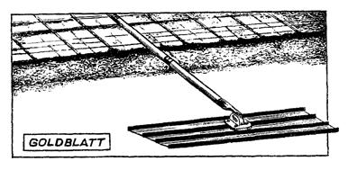
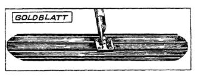
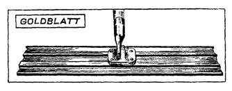
Гладилки для разравнивания бетонной смеси
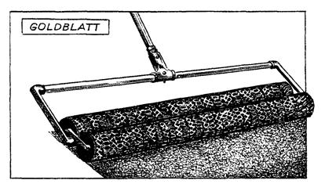
Валик для уплотнения малоподвижной и подвижной модифицированной смеси
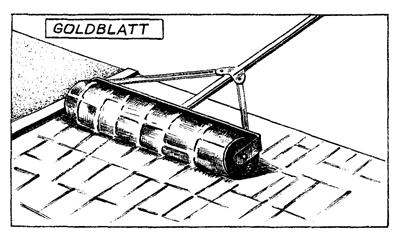
Валик для нанесения рисунка на свежеуложенный бетон
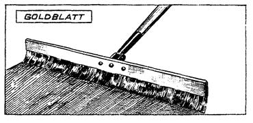
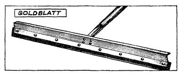
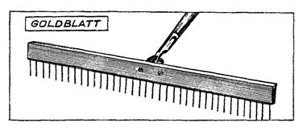
Инструменты для обработки поверхности из свежеуложенного бетона: с волосяной щеткой, резиновой насадкой и приспособлением для создания текстуры поверхности
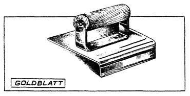
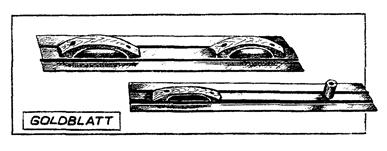
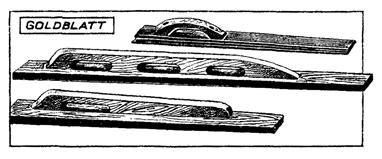
Инструменты для обработки и контроля качества поверхности свежеуложенного бетона: угловая затирка для создания ровных кромок швов; затирка и уровни
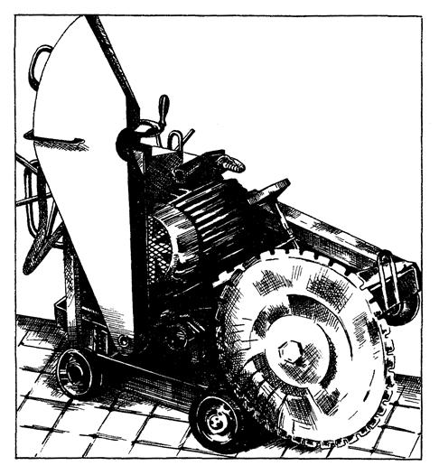
Нарезчик температурных швов в бетонных конструкциях
СОДЕРЖАНИЕ